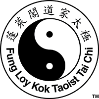

Home
About
Programs
Classes
Contact
Blog
☰ Menu
Top

Blog
Contact
Classes
Programs
About
Home
Contact Us
Name*
Email*
Subject
Message
Get In Touch
We love to meet people and introduce them to the Taoist Tai Chi ® Arts. If you would like to join a class or if you just want to find out more about who we are and what we do, please give us a call or send us an email.
Fung Loy Kok Institute of Taoism – Head Office
134 D’Arcy Street
Toronto, Ontario M5T 1K3
Canada
Tel: +1 (416) 656-2110
Fax: +1 (416) 654-3937
International Centre
248305 5 Sideroad
Mono, Ontario L9W 6L2
Canada
Tel: +1 (519) 941-5981
Fax: +1 (519) 941-4542